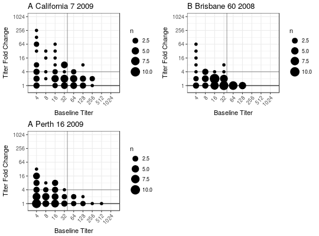
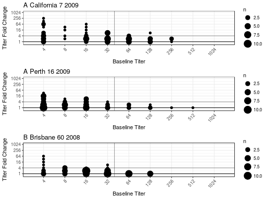
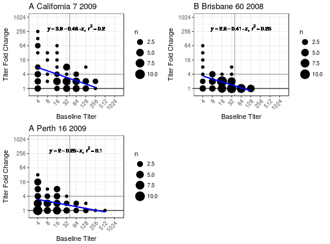
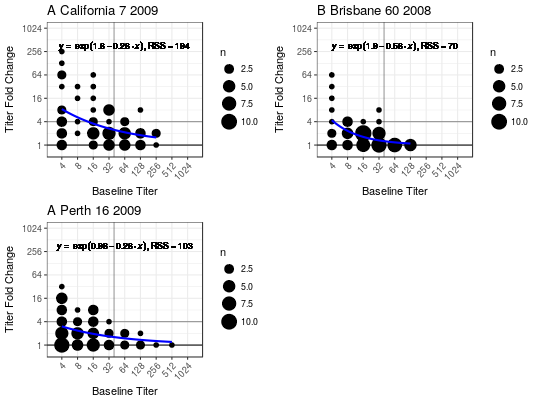

Bubble Chart
BubbleChart visualizes baseline vs fold change in titers
BubbleChart(dat_list, subjectCol = "SubjectID", fit = NULL, yMinZero = FALSE, eqSize = 6/log2(length(dat_list) + 1), colorBy = NULL, xlimits = c(1.5, 10.5), xbreaks = 2:10, ylimits = c(-0.5, 10), ybreaks = seq(0, 10, 2), plot = TRUE, cols = 2, ...)
Arguments
| dat_list | a named list like the one returned by |
|---|---|
| subjectCol | the name of the column specifying a subject ID. Default is "SubjectID". |
| fit | what type of fit to add. Current options are "lm" for linear model, "exp" for exponential, or |
| yMinZero | a logical specifying whether fitted y values below 0 should be set to 0. |
| eqSize | Text size of the equation. Only relevant if |
| colorBy | a character string specifying an endpoint to colorBy or |
| xlimits | the x-axis limits (passed to |
| xbreaks | the x-axis breaks (passed to |
| ylimits | the y-axis limits (passed to |
| ybreaks | the y-axis breaks (passed to |
| plot | logical indicating whether to plot or not. Default is TRUE |
| cols | numeric specifying how many columns to layout plot |
| ... | other arguments besides |
Value
(invisibly) a list of ggplot2 objects.
Details
This plot was designed for HAI titer data with baseline columns and fold change columns for multiple strains.
See also
FormatTiters
Examples
#>#>## Basic plot without any fitted model BubbleChart(titer_list)## Change layout to plot all in a single column BubbleChart(titer_list, cols = 1)## Add a linear fit BubbleChart(titer_list, fit = "lm")## Add an exponential fit BubbleChart(titer_list, fit = "exp")## Add coloring by age BubbleChart(titer_list, fit = "exp", colorBy = "AgeGroup")